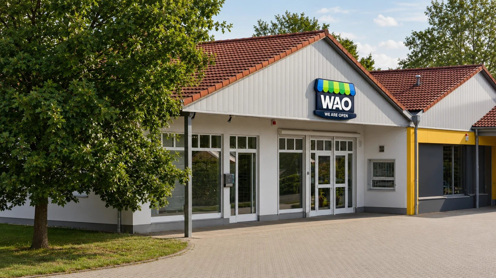
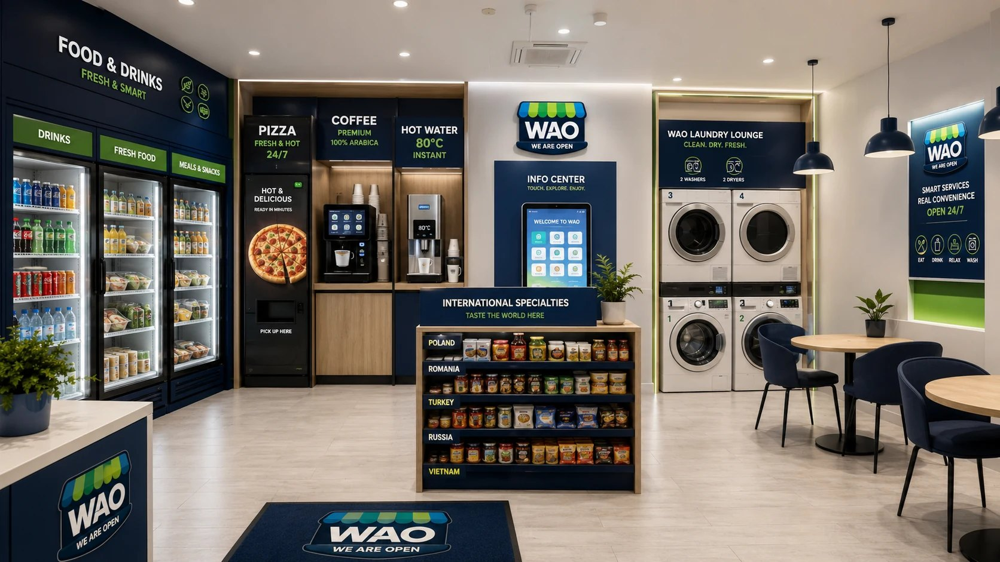
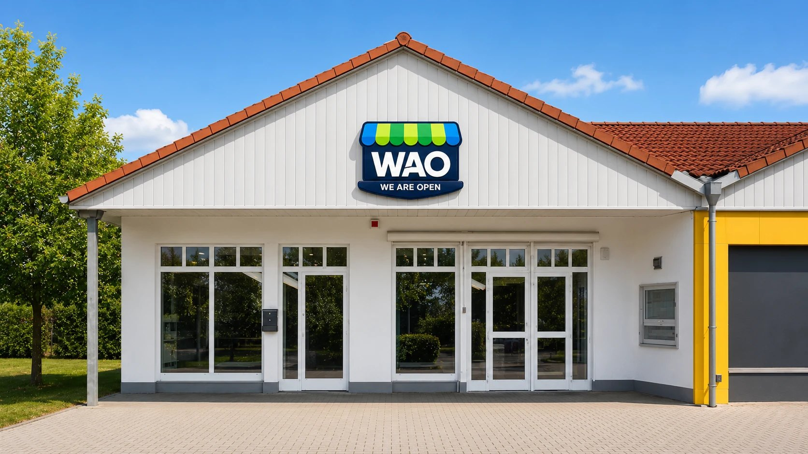

Smart fridges
Drinks, fresh food, snacks and practical products for a quick purchase.

WAO brings together food, drinks, laundry and local information in one modern 24/7 smart service hub – designed for Lemwerder and the people who live, work and travel here.

The concept
WAO combines practical services that would otherwise be spread across several locations. The footprint remains compact, while the experience feels like a modern, well-organised neighbourhood hub.
For people starting early shifts, returning late, taking short breaks or simply short on time, WAO is designed to work without friction: enter, choose, pay and continue – or stay for a coffee, do laundry and access useful local information.
Service modules
Each module answers a specific need and reinforces the others, creating repeat visits throughout the day.
Drinks, fresh food, snacks and practical products for a quick purchase.
Hot meals even when conventional food outlets are already closed.
Premium coffee and product-specific 80 °C hot water dispensing.
Two washing machines and two dryers for guests, contractors and travellers.
Familiar products and specialities for guests from Central and Eastern Europe and beyond.
Multilingual guidance on ferries, accommodation, food, jobs, doctors and navigation.
Drinking water, air, tools, snacks and information for cyclists along the Weser route.
A clean, bright place for short breaks and laundry waiting time.
The strongest local driver
Lemwerder, Berne and nearby communities are shaped by shipyards, suppliers and project-based industry. Alongside this economy, a dense network of private guesthouses, contractor accommodation and flexible rentals has developed.
WAO serves a customer base whose daily demand does not need to be invented – it is already present in the local area.
International specialists and project teams stay in the region throughout active contracts and need food and practical services every day.
Early starts, late returns and changing schedules make a reliable 24/7 offer particularly relevant.
A carefully selected international range makes WAO immediately useful to foreign workers and encourages repeat visits.
People living in guesthouses and contractor apartments organise food and laundry themselves. WAO combines both in one place.
Audiences
WAO is open to everyone. Its local strength comes from the combination of recurring work traffic, international accommodation and everyday neighbourhood demand.
People from Central and Eastern Europe and other regions who live and work in Lemwerder, Berne and the surrounding area for weeks or months.
Quick access to coffee, snacks, fresh food, drinks and laundry services.
A dependable stop before a shift, after work or on the way to the ferry.
Practical support, information and refreshments across the Weser region.
Pilot location · Hansering 7
The planned location sits within an established service area with direct access and existing parking. It combines local shopping traffic with the region’s industrial and commuter activity.

Direct access and parking reduce friction for both spontaneous and planned visits.
Proximity to maritime businesses, suppliers and project workplaces creates daily demand.
The connection to Bremen-Vegesack brings mobility and repeat journeys into the local environment.
Tourism adds seasonal demand to a concept built around year-round everyday use.
For investors
WAO is designed as a repeatable format: a compact footprint, modular service mix, high degree of automation and a brand identity that can transfer to other industrial, commuter and tourism locations.
Existing work, accommodation and commuter patterns provide a strong starting position.
Food, drinks, coffee, laundry and services create opportunities across the day.
The footprint is designed around clear customer flow, simple processes and lean operation.
Design, assortment and service modules can be adapted and rolled out to further locations.
Visualisation
The mockups illustrate the intended exterior presence and several perspectives for the compact interior. Equipment and final layout will be refined as the project progresses.
Note: These are professional concept visualisations, not photographs of a completed location.
Project status
WAO is currently in development. The pilot location will bring brand, assortment and operating processes together under real conditions.
Positioning, visual identity and service modules are being tailored to the location.
Machines, laundry, information and seating are arranged efficiently within 40–50 m².
The location launches with a focused range and clearly defined service processes.
Usage patterns and assortment are optimised to inform future locations.
Frequently asked questions
Not yet. WAO is currently in the project and implementation phase. This website presents the planned concept for the Lemwerder pilot location.
No. Vending technology is part of the infrastructure. The key is the combination of food, laundry, information and a comfortable environment.
Shipyard and industrial workers, international project teams, contractors, commuters, local residents, business travellers, tourists and cyclists.
Yes. Alongside a broad everyday range, WAO plans products that are familiar and relevant to international workers and guests.
That is the purpose of the pilot. WAO is intended as a modular brand for locations with similar work, mobility and service needs.
Contact & project enquiries
Interested as an investor, partner, landlord, supplier or future customer? Send us a short message.
Investor exposé